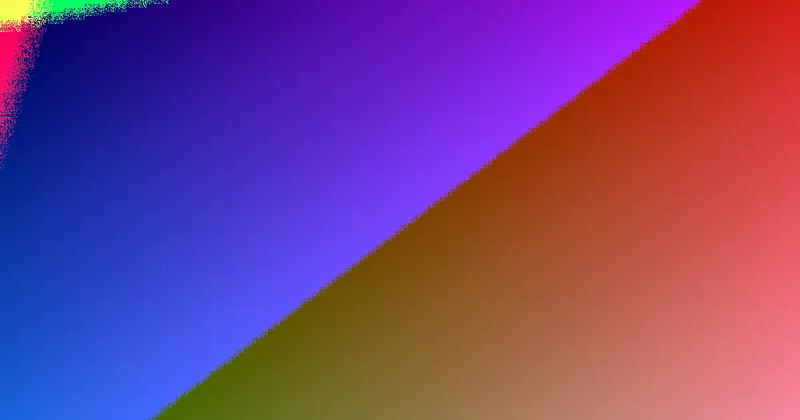

For a Caboolture boundary fence, start with a clear scope, measured line, and neighbour agreement for shared sections. Quotes should be itemised, detailing materials, height, and any upgrades. Understand that fences up to 1.8m are generally considered sufficient, while those over 2m require certifier approval. Pool fencing has specific safety standards.
For local buyers, fencing services caboolture understanding the practicalities of boundary responsibility, quote details, and specific regulations.
Fencing Services Caboolture Explained
Initiating a fencing project in Caboolture begins with a site-specific assessment. Submitting details about the fence line and having the property walked allows for noting ground conditions, access points, and existing fences before a fixed, written price is established. This practical approach is more beneficial than selecting a fence panel from a catalogue without a site inspection. Common delays arise from unmeasured fence lines or postponed neighbour discussions. For shared boundaries, quotes must be transparent, clearly outlining materials, height, length, removal costs, gate inclusions, access limitations, and any upgrade options. It's crucial to confirm the fence's location, whether it's on the boundary, within a property, enclosing a pool, or part of a rural setup. Inquire if the quote itemises removal, new posts, panels, gates, and automation.
Material Choice Considerations
Caboolture fencing options are often categorised by their intended use rather than solely by aesthetics. Colorbond is a popular choice for boundary fences, while timber palings are suitable for established streets. Lapped and capped timber offers a more premium finish, eliminating gaps. PVC fencing is noted for its low maintenance, requiring no painting. Glass and aluminium pool fencing are primarily addressed from a compliance perspective. For rural properties, the considerations shift towards strained wire, ringlock, star pickets, and the integration of driveway gates and automation. A suburban privacy fence and a rural boundary fence will have different requirements regarding posts, terrain, vehicle access, and gate load capacity. Use the material list as a preliminary selection tool, ensuring the final quote addresses the specific site conditions. Factors like a leaning existing fence, changes in ground grade, or the need for a gate to be supported by the same structure can influence the most practical and cost-effective material choice.
Neighbour and Boundary Line Dynamics
A fence constructed directly on the boundary line is classified as a dividing fence. Queensland's framework for dividing fences generally dictates that both property owners are equally responsible for the cost of a 'sufficient' fence, typically ranging from 0.5m to 1.8m in height and constructed from standard materials like palings, chain wire, metal panels, or brick. The cost of upgrades, such as a taller fence, a premium finish, or a material like Colorbond when a sufficient fence would suffice, is usually borne by the owner requesting the upgrade. While neighbours can agree to share upgrade costs, quotes should clearly distinguish between the sufficient fence and any chosen enhancements to avoid confusion. If an agreement cannot be reached, Queensland law provides for a 'notice to contribute,' which must include details of the land, fence line, work scope, estimated cost, and a written quote. If no agreement is reached within one month, either owner can pursue the matter through QCAT within the subsequent two months.
Height, Corners, and Pool Barrier Regulations
In Queensland, fences at or below 2m in height above natural ground level are generally considered accepted development. Exceeding this height requires sign-off from a certifier. It's important to note that if a fence is built on top of a retaining wall, the wall's height is included in the total measurement, potentially making the combined structure exceed the 2m threshold. Corner properties have specific considerations due to sight-line rules at intersections, ensuring visibility for drivers. Pool fencing is a distinct category with stringent requirements. Glass and aluminium pool barriers must comply with the Queensland pool safety standard, and only a licensed pool safety inspector can approve them. This compliance pathway is separate from standard boundary fence installations.
- Define the Scope. Clearly outline the fence line, including gates, pool areas, retaining walls, and access limitations.
- Measure the Fence Line. Accurately measure the total length of the fence required.
- Consult Neighbours. Discuss plans and responsibilities, especially for shared boundary fences.
- Obtain Itemised Quotes. Ensure quotes detail materials, labour, removal of old fences, and any potential upgrades.
- Verify Compliance. Check height regulations and specific standards for pool fencing if applicable.
Common questions
What is considered a 'sufficient' dividing fence in Queensland? A sufficient dividing fence in Queensland is generally between 0.5m and 1.8m high and constructed from standard materials like timber palings, chain wire, metal panels, or brick.
When is a certifier required for a fence in Caboolture? A certifier's sign-off is required for fences that exceed 2m in height above natural ground level.
Who pays for an upgrade to a dividing fence? Typically, the owner requesting an upgrade beyond a 'sufficient' dividing fence (e.g., for a taller fence or premium material) bears the additional cost, although neighbours can agree otherwise.
This guide covers planning for fencing services in the Caboolture district, including material choices, neighbour agreements, and regulatory requirements.